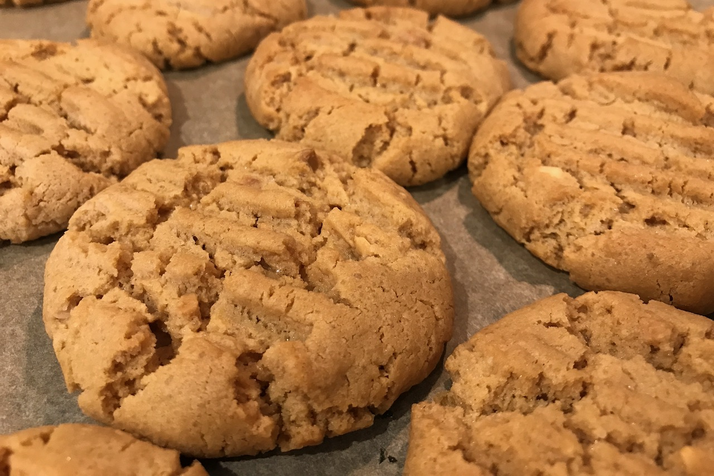

Peanut butter biscuits | June 20, 2020 Ingredients
- 200 g sugar
- 110 g butter
- 250 g peanut butter
- 1 tbsp vanilla essence
- 190 g plain flour
- 1 tsp baking soda
- 1 tsp baking powder
- 0.5 tsp salt
- 1 tsp soy milk
Method
Preheat oven to 190°C or 180°C fan forced.
Cream butter and sugar, then mix in peanut butter and vanilla essence. Add remaining ingredients, mix and shape into small balls. Press with fork.
Bake for 15 minutes.